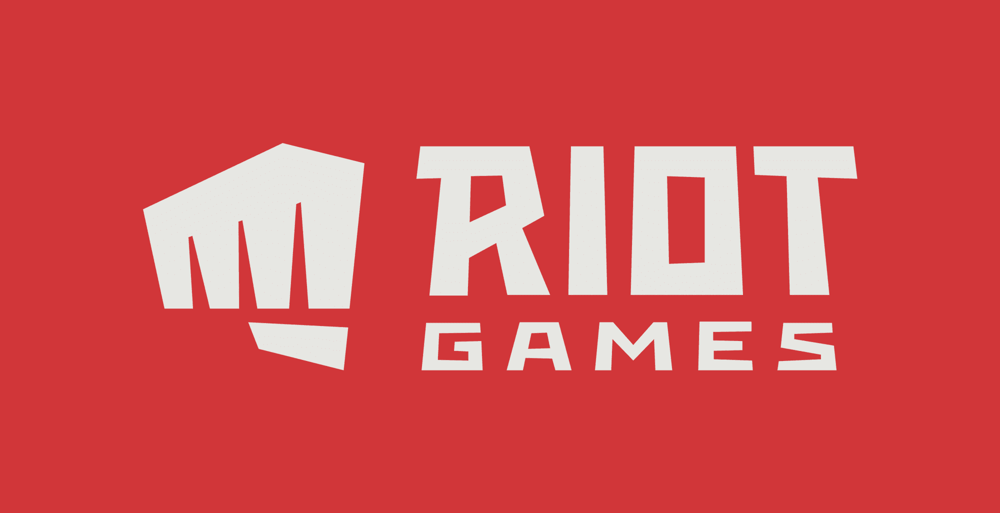

Informações gerais
Criação e lançamento
Aqui estão algumas informações sobre a criação e publicação do jogo:
- Desenvolvedora e publicadora
- Direção
- Produtores
- Projetistas
- Programadores
- Artista e compositor
- Motor e plataforma
Desenvolvedora e publicadora
A Riot Games Inc. é uma desenvolvedora, editora e organizadora de torneios de esportes eletrônicos americana com sede em West Los Angeles, Califórnia.
Foi fundada em setembro de 2006 por Brandon Beck e Marc Merrill para desenvolver League of Legends e passou a desenvolver vários jogos de histórias derivadas (spin-off) e o jogo de tiro em primeira pessoa não relacionado ao seu jogo principal, Valorant.
Direção
Os diretos do jogo são David Nottingham e Joe Ziegler.
David Nottingham é um produtor e game designer, está na industria de video games desde 1995. Ele já trabalhou em video games para Warner Interactive, Rockstar Games e LucasArts. David Nottingham também tem sua própria produtora de video games, DevLove, que trabalha em jogos para Sony, Atari e outras varias desenvolvedoras de jogos indie.
Não exietem muitas informações sobre o diretor Joe Ziegler. Depois de oito anos trabalhando com o jogo, zoe ziegler deixou o jogo. Agora, Valorant está sob comando do diretor Andy Ho, que já trabalhava na equipe do game.
Produtores
Os produtores do jogo são Anna Donlon e John Gosciki.
Anna Donlon
John Gosciki
Projetistas
Os projetistas do jogo são Trevor Romleski e Salvatore Garozzo.
Trevor Romleski
Salvatore Garozzo
Programadores
Os programadores do jogo são Paul Chamberlain, Dave Heironymus e David Straily.
Paul Chamberlain
Dave Heironymus
David Straily
Artista e compositor
O artista do jogo é Moby Francke e o compositor é Jesse Harlin
Moby Francke
Jesse Harlin
Motor e plataforma
O motor usado é Unreal Engine 4 e a plataforma é o Windows
Unreal Engine 4 é
Windows é